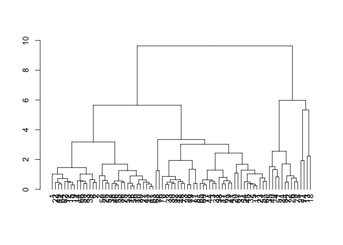

Data Collection
We obtained individual household electric power consumption dataset collected between November 2017 and July 2018 (9 months) from Miyama city in Fukuoka, Japan.
These electric data contains historical electric data collect by 30 minutes, day, hour, month, and year history of each household. Morover, we acquired detailed datasets including postal code, plan type, user id, and user name of each household.
The dataset contains some missing values in the measurements and some information that needed to be clean up.
Data Wrangling
The process of collecting, cleaning and reformatting the data collected, we are going to finish the following tasks.
Get data
Get minute electricity from the original data obtained from Miyama City. Picked energy consumption data from 2018/01/01 to 2018/06/30.
y <- 2018
ms <- 1:6
ds <- as.integer(days_in_month(as.Date(sprintf("%d-%d-01", y, ms))))
uids <- dir("./回路別")
# Find households that have all the data for 6 months.
nts <- rep(0, length(uids))
names(nts) <- uids
for (uid in uids) {
header <- sprintf("./回路別/%s/collect_30minhistory/%d/collect_30minhistory", uid, y)
nt <- 0
for (m in ms) {
d <- ds[m]
file <- sprintf("%s_%d%02d01_%d%02d%02d.csv", header, y, m, y, m, d)
f <- file.exists(file)
if (f == TRUE) { nt <- nt + 1 }
}
nts[uid] <- nt
}
avail_uids <- names(nts)[nts==6]
# Read data
data <- list()
na.list <- list()
n.list <- list()
for (uid in avail_uids) {
header <- sprintf("./回路別/%s/collect_30minhistory/%d/collect_30minhistory", uid, y)
for (m in ms) {
d <- ds[m]
nr0 <- d*48 # Number of data lines that should be included.
file <- sprintf("%s_%d%02d01_%d%02d%02d.csv", header, y, m, y, m, d)
df.tmp <- read.csv(file, header=T)
if (nrow(df.tmp) != nr0) {
n.list <- rbind(n.list, data.frame(uid=uid, month=m, nr=nrow(df.tmp), nr0=nr0))
}
x <- suppressWarnings(as.character(df.tmp[[1]]))
yrs <- suppressWarnings(as.integer(substr(x, 1, 4)))
mts <- suppressWarnings(as.integer(substr(x, 5, 6)))
dys <- suppressWarnings(as.integer(substr(x, 7, 8)))
hrs <- suppressWarnings(as.integer(substr(x, 9, 10)))
mns <- suppressWarnings(as.integer(substr(x, 11, 12)))
suppressWarnings(dates <-
as.POSIXct(sprintf("%d-%d-%d %02d:%02d", yrs, mts, dys, hrs, mns),
format="%Y-%m-%d %H:%M", optional=T))
pp <- which(is.na(dates))
nna <- length(pp)
# Record missing row information (uid, month, row).
if (nna>0) {
for (p in pp) {
na.list <- rbind(na.list, data.frame(uid=uid, month=m, position=p))
}
}
data <- rbind(data, data.frame(datetime=dates, power=df.tmp[['使用電力量']],
user_id=rep(uid, times=nrow(df.tmp))) )
}
}Handling ID of households with insufficient number of data
num_rows <- sapply(avail_uids, function(x) length(which(data$user_id==x)))
n0 <- sum(ds) * 48
cat("ID of households with insufficient number of data\n")
cat(sprintf(" %s\n", paste(names(num_rows)[num_rows != n0], collapse=", ")))
if (FALSE) {
cat(sprintf("# of NA (datetime) = %d\n", sum(is.na(data$datetime))))
cat(sprintf("# of NA (power) = %s\n", sum(data$power == '-')))
cat("## SAMPLES which datetime is OK but power is -\n")
a <- which(is.na(data$datetime))
b <- which(data$power == '-')
print(head(data[setdiff(b, a),]))
}Change date and time part to date and time code.
# Read data
avail_uids2 <- setdiff(avail_uids, n.list$uid)
data2 <- list()
for (uid in avail_uids2) {
header <- sprintf("./回路別/%s/collect_30minhistory/%d/collect_30minhistory", uid, y)
for (m in ms) {
d <- ds[m]
file <- sprintf("%s_%d%02d01_%d%02d%02d.csv", header, y, m, y, m, d)
df.tmp <- read.csv(file, header=T)
ndata <- nrow(df.tmp)
dt0 <- as.Date(sprintf("%d-%d-01", y, m))
dt1 <- as.Date(sprintf("%d-%d-%d", y, m, d))
data2 <- rbind(data2, data.frame(
Date=rep(seq(dt0, dt1, by="days"), each=48),
timecode=rep(1:48, times=d),
power=df.tmp[['使用電力量']],
user_id=rep(uid, times=ndata)) )
}
}
data2$power[data2$power=='-'] <- NAAdd day information including Holidays and holidays on Sundays.
get.jholidays <- function(year) {
# Acquire Japanese holiday information.
holidays <- Nippon::jholiday(year, holiday.names=F)
# Definition of the New Year's holiday, Obon vacation.
extra.holidays <- as.Date(c(paste0(year, "-1-", 1:3), paste0(year, "-8-",
13:15),
paste0(year, "-12-", 29:31)))
holidays <- c(holidays, extra.holidays)
return(holidays)
}
holidays <- get.jholidays(y)
data2$wday <- wday(data2$Date)
data2$wday[data2$Date %in% holidays] <- 1Merge contract plan information.
At this point, the data for six households that are in the power data but are not registered in the household information are deleted.
df.plan <- read.csv("./世帯情報.csv", header=T)
df <- merge(data2, df.plan, by='user_id')
df$power <- as.integer(df$power)Handling missing values with an average.
# fill missing values with the computed average.
df$power = ifelse(is.na(df$power),
ave(df$power, FUN = function(x)
mean(x,na.rm = TRUE)),df$power)
sum(is.na(df))Add more features including location, latitude, longitude.
Let’s replace the postal code variable so that it can be read by the ggmap() function for plotting a map.
# Changing the postal codes.
df$postal_code = gsub('[^0-9\\-]','', df$postal_code)
df$postal_code = as.factor(df$postal_code)
# Calling Changing function to tranfrom the postal codes from a lib file.
df = chaningPostalCode(df)Summarize daily power consumption data and assign to new variable.
# Summarize daily power consumption data and group by variables.
df.day <- df %>% group_by(Date, user_id, location,lat,lon,timecode) %>% summarize_at("power", sum)
df.day$wday <- wday(df.day$Date)
df.day$wday[df.day$Date %in% holidays] <- 1
df.day <- inner_join(df.day, df.plan, by="user_id")# Saving data into R aata format.
save(df, df.day, file = "MiyamaData.Rdata")After data wrangling.
Finally, the dataset contains 747,168 observation of 12 variables gathered between January 2018 and June 2018 (6 months). It is a subset of an original larger data.
# Reload df saved in the earlier function.
load("MiyamaData.Rdata")
# Compactly display the internal structure of an R object.
str(df.day)## Classes 'grouped_df', 'tbl_df', 'tbl' and 'data.frame': 747168 obs. of 12 variables:
## $ Date : Date, format: "2018-01-01" "2018-01-01" ...
## $ user_id : chr "asyxuq" "asyxuq" "asyxuq" "asyxuq" ...
## $ location : chr "Setakamachi Kaminosho" "Setakamachi Kaminosho" "Setakamachi Kaminosho" "Setakamachi Kaminosho" ...
## $ lat : num 33.2 33.2 33.2 33.2 33.2 ...
## $ lon : num 130 130 130 130 130 ...
## $ timecode : int 1 2 3 4 5 6 7 8 9 10 ...
## $ power : num 227 161 194 157 203 158 209 235 242 189 ...
## $ wday : num 1 1 1 1 1 1 1 1 1 1 ...
## $ postal_code: Factor w/ 44 levels "〒830-0039","〒830-0070",..: 22 22 22 22 22 22 22 22 22 22 ...
## $ plan_type : Factor w/ 6 levels "オール電化Eプラン",..: 4 4 4 4 4 4 4 4 4 4 ...
## $ aiseg_nb : Factor w/ 100 levels "00141-85606",..: 97 97 97 97 97 97 97 97 97 97 ...
## $ user_name : Factor w/ 100 levels "中尾 眞智子",..: 98 98 98 98 98 98 98 98 98 98 ...
## - attr(*, "vars")= chr "Date" "user_id" "location" "lat" ...
## - attr(*, "drop")= logi TRUEAttribute Information
- Date – the day of the month or year as specified by a number.
- user_id – id of each user/household.
- location – a particular place of each household in Miyama city.
- lat – latitude of each location of each household in Miyama city.
- lon – longitude of each location of each household in Miyama city.
- timecode – the date and time were converted to timecode.
- power – daily energy usage of each household (in watt-hour of active energy).
- wday – the day of the week as a decimal number (01-07, Sunday is 1).
- postal_code – postal codes for all regions in Japan.
- plan_type – types of electricity plans.
- aiseg_nb – code of electricity plan types.
- user_name – username of each user/household.
Exploring daily power consumption of consumers
Before designing the energy prediction model, we had analyzed the collected data to discover some interesting findings that we would then explore further.
Summarize daily power consumption for each household (user Ids)
df.mean <- df.day %>% group_by(user_id, location) %>%
dplyr::summarise(pw_mean = round(mean(power), 4), pw_total = round(sum(power), 4)) %>%
arrange(desc(pw_mean))
datatable(df.mean, options = list(pageLength = 6))Summarize distribution of power consumption for each location
Summarize mean daily power consumption for each location
- Fig. shows the daily electric power consumption between January 1 and June 30, 2018 for the different locations considered in this study. Daily electric power consumption values indicate that User kryetv has the highest total energy consumption within this period.
- The average electric power consumption per day for each location ranges from 0 Wh to about 48.587 kWh.
Summarize mean daily power consumption for each houshhold
- Fig. shows the daily electric power consumption between January 1 and June 30, 2018 for the different households considered in this study. Daily electric power consumption values indicate that Setakamachi Takayanagi has the highest total energy consumption within this period.
- The average power consumption per day for each household ranges from 0 Wh to about 42.599 kWh.
Cluster analysis
k-means method
Plot the silhouette diagram by changing the number of clusters from 2 to 8
nc <- ncol(df.house)
models <- lapply(1:8, function(k) {
kmeans(df.house[, 2:nc], centers=k, iter.max=300, nstart=10)
})
dmat <- dist(df.house[, 2:nc])
par(mfrow=c(2,4))
for (k in 2:8) {
ml <- models[[k]]
s <- silhouette(x=ml$cluster, dist=dmat)
a <- summary(s)$avg.width
plot(s, col=rainbow(k), do.n.k=F, do.clus.stat=F, main=paste("k=", k), xlab=NULL)
abline(v=a, col="red")
}- About the silhouette value
- It takes a value from -1 to 1.
- As closer to 1 it means that the sample is separated from other clusters (well separated).
- If it is close to 0, it means that it is close to or overlaps other clusters.
- A minus signifies that the sample may be classified as another wrong cluster.
- In the silhouette diagram, it is necessary that the sample exceeding the average value of the silhouette value is as it is.
- If there are clusters without samples that exceed the average value of the silhouette values, it is not very good.
Considering such characteristics of the silhouette value and silhouette diagram, it is considered that the number of thrusters = 5 is relatively good.
- For the time being, consider the case of k = 5.
Plot state of classification
ml <- models[[5]]
df <- df.house
df$cls <- ml$cluster
nc <- ncol(df)
# k Random forest execution (to obtain importance) as clusters obtained by the average method as teacher data.
f.str <- paste("cls ~", paste(names(df)[2:(nc-1)], collapse='+'))
f <- as.formula(f.str)
m.rf <- randomForest(f, df, ntree=100)
imp <- importance(m.rf)
df.tmp <- data.frame(name=dimnames(imp)[[1]], imp=as.numeric(imp))
ggplot(df.tmp, aes(x=reorder(name, imp), y=imp, group=1)) + geom_bar(stat="identity") +
xlab("variable name") + ylab("importance") +
theme(axis.text.x=element_text(angle=90, hjust=1))***
- Maximum power consumption per day (“power.max?”) is an important variable.
- The minimum power consumption per day (“power.min?”) has little relation to the classification.
- Important in order of “max”, “sd”, “moment”, “mean”, “skewness”, “kurtosis”?
Cluster variables by narrowing down variables
sts <- c("max", "min", "mean", "moment", "kurtosis", "skewness", "sd")
vars <- paste0("power.", sts)
models2 <- lapply(1:8, function(k) {
kmeans(df.house[, vars], centers=k, iter.max=300, nstart=10)
})
dmat2 <- dist(df.house[, vars])
par(mfrow=c(2,4))
for (k in 2:8) {
ml <- models2[[k]]
s <- silhouette(x=ml$cluster, dist=dmat2)
a <- summary(s)$avg.width
plot(s, col=rainbow(k), do.n.k=F, do.clus.stat=F, main=paste("k=", k), xlab=NULL)
abline(v=a, col="red")
}ml <- models2[[5]]
df <- df.house
df$cls <- factor(as.character(ml$cluster))
nc <- ncol(df)
# k Random forest execution (to obtain importance) as clusters obtained by the average method as teacher data.
f.str <- paste("cls ~", paste(vars, collapse='+'))
f <- as.formula(f.str)
m.rf <- randomForest(f, df, ntree=100)
imp <- importance(m.rf)
df.tmp <- data.frame(name=dimnames(imp)[[1]], imp=as.numeric(imp))
ggplot(df.tmp, aes(x=reorder(name, imp), y=imp, group=1)) + geom_bar(stat="identity") +
xlab("variable name") + ylab("importance") +
theme(axis.text.x=element_text(angle=90, hjust=1, family=JPFont))# Plot state of classification.
v1 <- dimnames(imp)[[1]][order(imp, decreasing=T)[1]]
v2 <- dimnames(imp)[[1]][order(imp, decreasing=T)[2]]
ggplot(df, aes_string(x=v1, y=v2, colour="cls")) + geom_point()Are you influenced by the magnitude of the value?
apply(df[,vars], 2, range)## power.max power.min power.mean power.moment power.kurtosis
## [1,] 21.36494 0.0000 5.83796 5.83796 1.267675
## [2,] 2915.36241 501.7305 1005.09951 1005.09951 11.494458
## power.skewness power.sd
## [1,] -1.005860 7.104136
## [2,] 3.038651 765.347954- It seems that the importance of the variable depends on the magnitude (range) of the value.
- Min-max Normalize and perform clustering and importance analysis.
Scaling
Apply min-max scaling.
nc <- ncol(df.house)
vars <- names(df.house)[2:nc]
df.house.scale <- data.frame(user_id=df.house$user_id)
for (v in vars) {
r <- range(df.house[[v]])
a <- 1/(r[2]-r[1])
b <- r[1]*a
df.house.scale[[v]] <- df.house[[v]]*a-b
}Here, the k-means method is applied. First, use all variables.
nc <- ncol(df.house.scale)
models.scale <- lapply(1:8, function(k) {
kmeans(df.house.scale[, 2:nc], centers=k, iter.max=300, nstart=10)
})
dmat.scale <- dist(df.house.scale[, 2:nc])
par(mfrow=c(2,4))
for (k in 2:8) {
ml <- models.scale[[k]]
s <- silhouette(x=ml$cluster, dist=dmat.scale)
a <- summary(s)$avg.width
plot(s, col=rainbow(k), do.n.k=F, do.clus.stat=F, main=paste("k=", k), xlab=NULL)
abline(v=a, col="red")
}- In the case of using normalized data, it has not been successfully divided into clusters.
What about using some variables?
sts <- c("max", "min", "mean", "moment", "kurtosis", "skewness", "sd")
vars <- paste0("power.", sts)
models2.scale <- lapply(1:8, function(k) {
kmeans(df.house.scale[, vars], centers=k, iter.max=300, nstart=10)
})
dmat2.scale <- dist(df.house.scale[, vars])
par(mfrow=c(2,4))
for (k in 2:8) {
ml <- models2.scale[[k]]
s <- silhouette(x=ml$cluster, dist=dmat2.scale)
a <- summary(s)$avg.width
plot(s, col=rainbow(k), do.n.k=F, do.clus.stat=F, main=paste("k=", k), xlab=NULL)
abline(v=a, col="red")
}
- Again, it is not well separated.
How about hierarchical cluster analysis?
ml0 <- hclust(dmat.scale, method="ward.D2")
ml0.dend <- as.dendrogram(ml0)
plot(ml0.dend)
cc <- cutree(ml0, k=1:8)
par(mfrow=c(2,4))
for (k in 2:8) {
s <- silhouette(x=cc[,k], dist=dmat.scale)
a <- summary(s)$avg.width
plot(s, col=rainbow(k), do.n.k=F, do.clus.stat=F, main=paste("k=", k), xlab=NULL)
abline(v=a, col="red")
}- It has not been successfully classified by HC.
- There are classes that do not exceed the average value of silhouette values.
- There are quite a few elements whose silhouette value is negative.
- Cluster analysis (k-means method, hierarchical cluster analysis) using normalized data failed to classify households successfully.
- Is the information shortage?
Add statistics on day of the week direction to explanatory variables
- However, statistical information on power consumption for each day of the week in the time zone direction is omitted.
- Variables to use are as follows (14 variables)
- Statistics for average power consumption per time zone.
- Statistics for the average daily power consumption for each day of the week.
- Statistics = maximum, minimum, average, standard Deviation, (Secondary) Moment, kurtosis, skewness - moment, kurtosis, skewness are used as indicators of distribution shape features.
df.td3 <- df.td %>% group_by(user_id, wday) %>% summarize_at("power", sum, na.rm=T)
# max, min, mean, moment, kurtosis, skewness, sd
df.max3 <- df.td3 %>% group_by(user_id) %>% summarize_at("power", max, na.rm=T)
df.min3 <- df.td3 %>% group_by(user_id) %>% summarize_at("power", min, na.rm=T)
df.mean3 <- df.td3 %>% group_by(user_id) %>% summarize_at("power", mean, na.rm=T)
df.moment3 <- df.td3 %>% group_by(user_id) %>% summarize_at("power", moment, na.rm=T)
df.kurtosis3 <- df.td3 %>% group_by(user_id) %>% summarize_at("power", kurtosis, na.rm=T)
df.skew3 <- df.td3 %>% group_by(user_id) %>% summarize_at("power", skewness, na.rm=T)
df.sd3 <- df.td3 %>% group_by(user_id) %>% summarize_at("power", sd, na.rm=T)
# To summarize
df.stat3 <- inner_join(df.max3, df.min3, by="user_id", suffix=c(".max", ".min"))
df.stat3 <- inner_join(df.stat3, df.mean3, by="user_id")
df.stat3 <- inner_join(df.stat3, df.moment3, by="user_id", suffix=c(".mean", ".moment"))
df.stat3 <- inner_join(df.stat3, df.kurtosis3, by="user_id")
df.stat3 <- inner_join(df.stat3, df.skew3, by="user_id", suffix=c(".kurtosis", ".skewness"))
df.stat3 <- inner_join(df.stat3, df.sd3, by="user_id")
names(df.stat3)[which(names(df.stat3)=="power")] <- "power.sd"
df.house2 <- data.frame(user_id=df.house$user_id)
df.house2 <- inner_join(df.house2, df.stat3, by="user_id")
df.house2 <- inner_join(df.house2, df.stat2, by="user_id", suffix=c(".wd", ".tc"))
df.house2.scale <- data.frame(user_id=df.house2$user_id)
vars <- names(df.house2)[2:ncol(df.house2)]
for (v in vars) {
r <- range(df.house2[[v]])
a <- 1/(r[2]-r[1])
b <- r[1]*a
df.house2.scale[[v]] <- a*df.house2[[v]] - b
}k split by average method
- Use normalized data.
vars <- names(df.house2.scale)[2:ncol(df.house2.scale)]
models3.scale <- lapply(1:8, function(k) {
kmeans(df.house2.scale[, vars], centers=k, iter.max=300, nstart=10)
})
dmat3.scale <- dist(df.house2.scale[, vars])
par(mfrow=c(2,4))
for (k in 2:8) {
ml <- models3.scale[[k]]
s <- silhouette(x=ml$cluster, dist=dmat3.scale)
a <- summary(s)$avg.width
plot(s, col=rainbow(k), do.n.k=F, do.clus.stat=F, main=paste("k=", k), xlab=NULL)
abline(v=a, col="red")
}- We added statistics on power consumption change for one week, but it can not be said that clustering is not so successful.
For the time being, we use the classification result in the case of k = 5 which is relatively well classified to find the importance of the variable.
ml <- models2.scale[[5]]
df <- df.house2.scale
df$cls <- factor(as.character(ml$cluster))
nc <- ncol(df.house2.scale)
vars <- names(df.house2.scale)[2:nc]
# k Run the random forest (to obtain importance) as a teacher data cluster obtained by the average method
f.str <- paste("cls ~", paste(vars, collapse='+'))
f <- as.formula(f.str)
m.rf <- randomForest(f, df, ntree=100)
imp <- importance(m.rf)
df.tmp <- data.frame(name=dimnames(imp)[[1]], imp=as.numeric(imp))
ggplot(df.tmp, aes(x=reorder(name, imp), y=imp, group=1)) + geom_bar(stat="identity") +
xlab("variable name") + ylab("importance") +
theme(axis.text.x=element_text(angle=90, hjust=1, family=JPFont))# Plot state of classification.
v1 <- dimnames(imp)[[1]][order(imp, decreasing=T)[1]]
v2 <- dimnames(imp)[[1]][order(imp, decreasing=T)[2]]
ggplot(df, aes_string(x=v1, y=v2, colour="cls")) + geom_point()- It seems to be separated for the time being, but …
Plot explanation variable median value of household belonging to each cluster
The ribbon is drawing from the first quartile to the third quartile.
fun.data <- function(x) {
res <- smedian.hilow(x, conf.int=0.5)
names(res) <- c("y", "ymin", "ymax")
return (res)
}
df.plot <- melt(df, id.vars="cls", measure.vars=vars)
ggplot(df.plot, aes(x=variable, y=value, colour=cls, fill=cls, group=cls)) +
geom_line(stat="summary", fun.y=median) +
geom_ribbon(stat="summary", fun.data=fun.data, alpha=0.5, colour=NA) +
scale_colour_discrete(name="cluster") +
guides(fill=F) +
theme(axis.text.x=element_text(angle=90, hjust=1))- There are many overlapping distribution ranges of explanatory variables for each class.
- Characteristic between classes is hard to understand.
Future issues to be examined
- Add power consumption information for each household appliance.
Looking for other parts of this series?